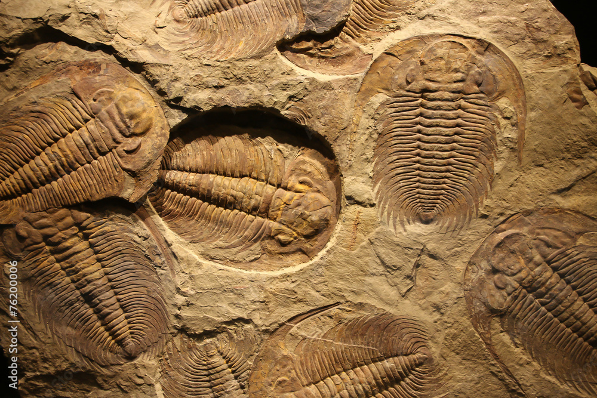

ฟอสซิลเกิดขึ้นได้อย่างไร?
กระบวนการที่สัตว์ เช่น ไดโนเสาร์ กลายเป็นฟอสซิลได้บ่อยที่สุด เรียกว่า การกลายเป็นหิน (Petrification) ซึ่งเป็นกระบวนการที่เกิดขึ้น เป็นเวลานานหลายพันปีหรือหลายล้านปี โดยมีขั้นตอนสำคัญดังนี้
ขั้นตอนการเกิดฟอสซิล
1. สัตว์ตัวนั้นตาย
2. ส่วนที่อ่อนนุ่มของร่างกาย เช่น ผิวหนังและกล้ามเนื้อ จะเริ่มเน่าเปื่อย และอาจถูกสัตว์กินซากกินจนเหลือเพียงส่วนที่แข็ง เช่น กระดูกและฟัน
3. ก่อนที่ร่างกายจะหายไปอย่างสมบูรณ์ ร่างกายจะถูกฝังอยู่ใต้ตะกอน เช่น โคลน ทราย หรือดินเหนียว
4. ชั้นตะกอนจำนวนมากทับถมอยู่ด้านบน ทำให้เกิดน้ำหนักและความดันสูง ส่งผลให้ชั้นตะกอนด้านล่างถูกบีบอัดและค่อย ๆ กลายเป็นหินตะกอน
5. น้ำที่มีแร่ธาตุจะซึมเข้าไปในกระดูกและฟัน แร่ธาตุเหล่านี้จะค่อย ๆ สะสมและแทนที่สารอินทรีย์ในกระดูก ทำให้ส่วนต่าง ๆ กลายเป็นหินและถูกเก็บรักษาไว้เป็นฟอสซิล

กระบวนการเกิดฟอสซิลอาจใช้เวลานานหลายพันปีจนถึงหลายล้านปี ขึ้นอยู่กับสภาพแวดล้อมและชนิดของซากสิ่งมีชีวิต
น้ำที่ซึมผ่านกระดูกจะทิ้งผลึกแร่ธาตุไว้ตามช่องว่างภายในกระดูก จึงทำให้ฟอสซิลไดโนเสาร์บางชนิดมีลักษณะคล้ายฟองน้ำหรือรังผึ้ง เนื่องจากโครงสร้างภายในของกระดูกได้รับการอนุรักษ์เอาไว้
ซากต้นไม้ก็สามารถเกิดฟอสซิลได้ในลักษณะเดียวกัน โดยเรียกว่า "ไม้กลายเป็นหิน" กระบวนการนี้สามารถรักษาโครงสร้าง ของต้นไม้เอาไว้ได้ จนบางครั้งสามารถมองเห็นและนับวงปีของต้นไม้ได้